Research Experience
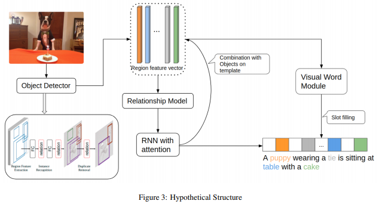
Relationship-based Image Captioning
- This is a research project about Vision and Language for my master thesis.
- Doing research on how to combine the Image Caption Generation with visual Relationship Detection.
- Developing the models, one is Faster RCNN to extracting the proposal features, one is Language model with attention to generate the captions.
- Adding the relation module into Faster RCNN to improve the performance.
- Combining the Language model with the relationship features from relation module and exploring how to use the attention mechanism for relationship features.
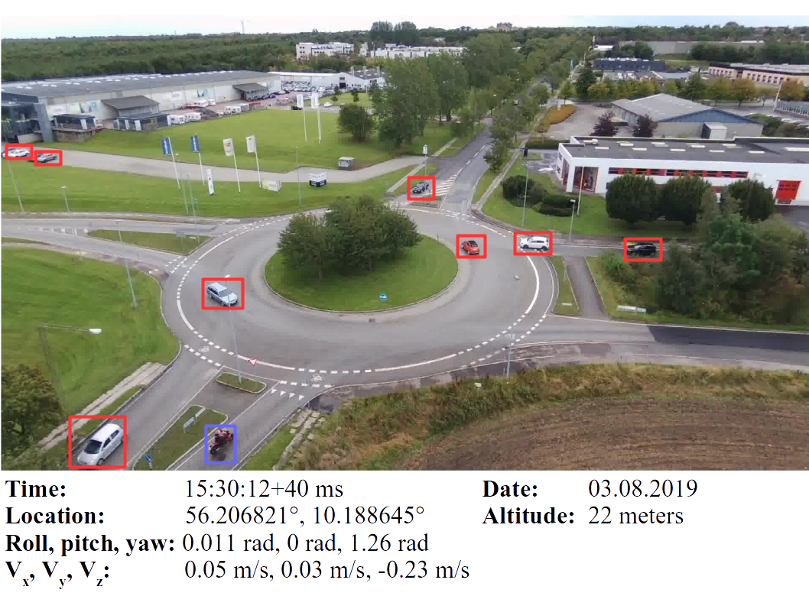
Object Detection on Unmanned aerial vehicles(UAVs) dataset
- This was a study on Object Detection on Unmanned Aerial Vehicles (UAVs) Dataset.
- Compared between different UAVs dataset and chose AU-AIR dataset.
- Analyzed the image features and researched traditional Object Detection Framework.
- Developed the Faster-RCNN model which fitted to UAVs dataset by Pytorch.
- Optimized the performance by RoI Align instead of RoI Pooling in Faster-RCNN for improving mAP up 1.5%.
- Compared and Analyzed the results of Faster-RCNN and FPN which provided by Torchvision.
- Added the relation module into Faster-RCNN for improving mAP.
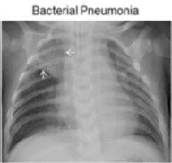
Pneumonia Classification by Artificial Intelligence
- This was a task from Kaggle which used AI technology to classify the pneumonia.
- Developed the Random Forest model and Convolutional Neural Network model by Python and Keras
- Used Grey Histogram and Convolutional Neural Network to extract the image features.
- Analyzed the results with two feature maps from Grey Histogram and CNN on the Random Forest model.
- Used data argumentation to balance the positive and negative data and improved the score up 2%..
- Optimized and analyzed the hyper-parameters on two models with confusion matrix/ROC/AUC.
Network Security
- This was a network security research which let system passed the security checking of Huawei.
- Researched some papers and blogs to learn how to detect the security breach.
- Summarized the security developing rules and modification method for network security based on NMS which reduced the checking time for others systems.
- Led a five-person team to modify the system based on the security developing rules.
- Assisted other teams to finish the network security checking.
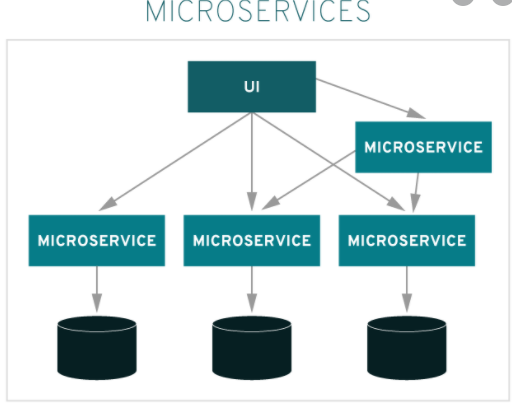
Microservice Architecture
- This was an architecture research of Microservice for technology transformation.
- Led a six-person team to do the research of Microservice architecture.
- Summarized the features of Microservice and developed methods following AWS.
- Developed a demo of Network Unit KPI monitor project.
- Developed a framework of Microservice on current system.
Project Experience
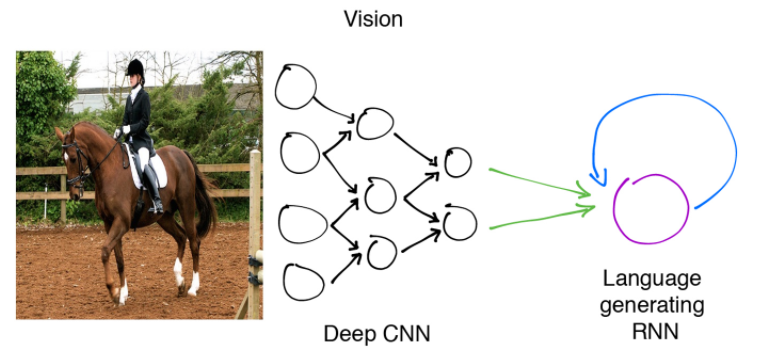
Image Caption Generation
It was a coursework of Natural Language Processing. In this project, I used the Flickr 8K dataset to train the Image Caption Generation model. For model, I developed the normal framework from “show and tell” paper which used the CNN as encoder and LSTM as decoder. Then I used the BLEU to evaluate this model and got good result. Finally, I added the attention module from “show, attend and tell” paper into the model and evaluated the result. From this experiment, it gave me a preliminary knowledge of NLP and the intersection of CV and NLP.
CK+ Emotion Classification
It was an emotion classification project. In this project, the CK+ dataset is used to train the neural network. For understanding the neural network and loss function, I implemented the fully connected layer and cross-entropy/MSE loss function with SoftMax / ReLu activation function by myself. Besides, I also add the dropout between the hidden layer and output layer. Besides, I derived the formula which implemented the forward and backward. In this project, I got the preliminary application and knowledge of Neural Network and Computer Vision.
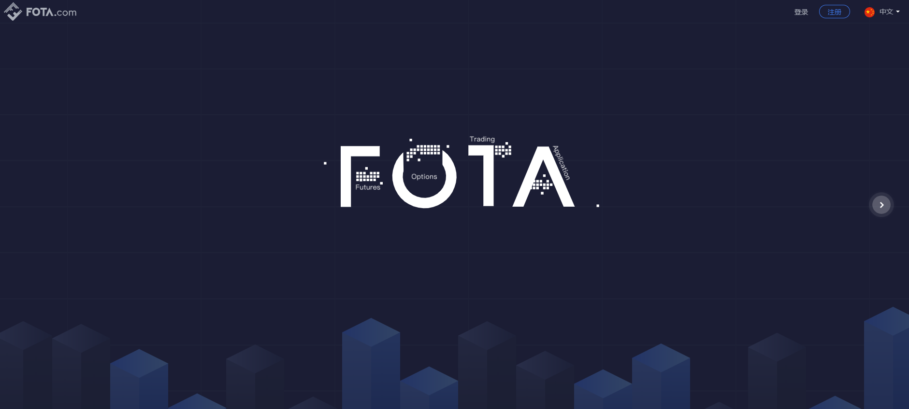
Fota Trading System
This was a trading system of digital currency which contained option trading. It contained real-time information of many digital currency, the number of trading, digital currency translation and so on. As the main front-end developer, I mainly focused on real-time price of digital currency, trading caculation, login and register and so on. Besides, I used ReactJS, HTML, SCSS to build the components which could be used for other systems.
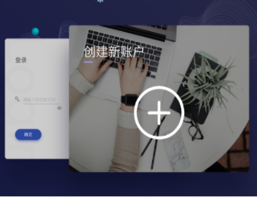
Digital Wallet
This was a online wallet project of digital currency. It is built on Fotuna published mainnet. It contained digital currency translation, digital currency bank, agent module, login and register module and so on. As the front-end leader, I led four-person team to finish the components selection, website development, interface debug and testing.
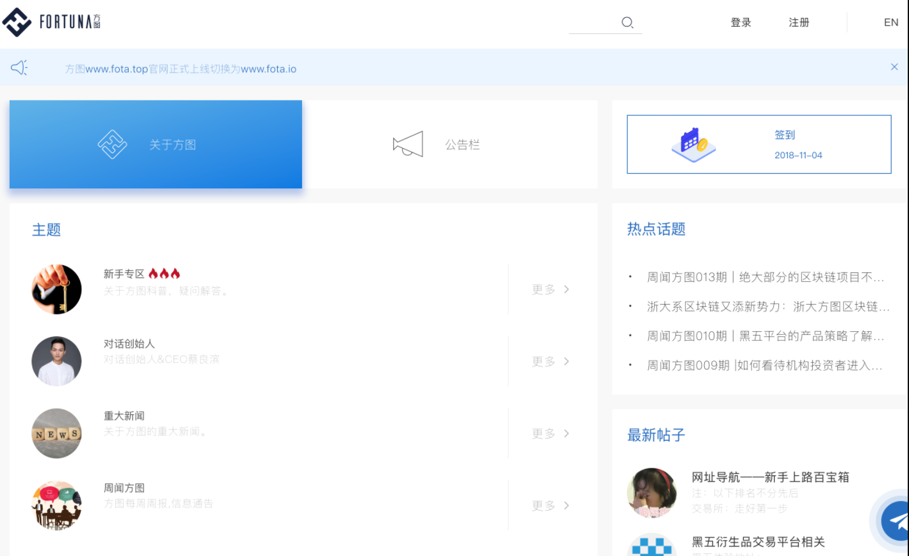
Fortuna BBS
This was a BBS forum project which the fans of Digital Currency could communicate about the news/trend. In this project, I mainly focused on analysis and development of BBS management system which allowed administrator to manage and monitor the BBS formus. For this project, I used AntD components with ReactJS to develop front-end system and layers.
CCE Network Security Checking
This was a network security checking project for CCE which is a lightweight NMS. Based on the Network Security research which I had finished before, I led four-team to finish the network security checking/modification for CCE and passed the huawei security checking tools. Besides, I also helped other teams to check their system whether had security bugs.
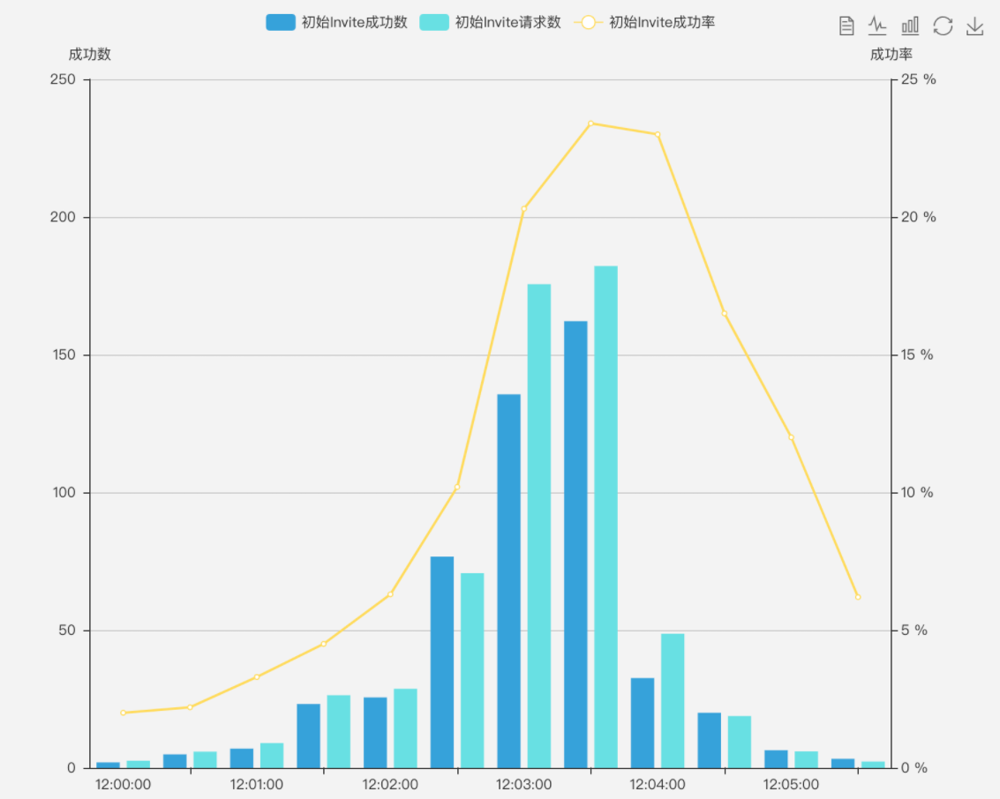
Monitor and quickly recover by KPI
This was a module of CCE which is a system for operators such as China Mobile and Vodafone and had two version, one is based on tradition IEMP platform and another is based on Microservice. By monitoring of KPI and management policy, broken VNF(virtual network function) and VM could be manipulated by itself such as rebooting, isolation, rebuilding and other methods to recover the virtual network. I developed the first version based on IEMP with my teammates. Then I also led a team to design the architecture based on Microservice Architecture and finish the development of project by Java, HTML, CSS and JavaScript.
POP
This was a policy management platform which applied for China Mobile to manage policy of network elements such as phone message, network datas. In this project, I mainly focused on policy display, policy dashboard and policy modification. I used Eview components with HTML, CSS, JavaScript to develop the front-end website. This is the first time to use Eview which I researched on Large Management System.
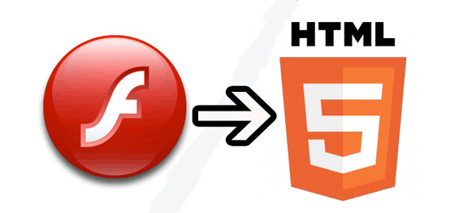
UI technology transformation
Because original fronted technology was not adapted to development of project, department leaders decided to change another front-end technology for development. I was worked on researching the new technology to develop website and outputted the comparison between Eview and Nano. After that, I developed a components of CCE based on Eview for testing the new technology.
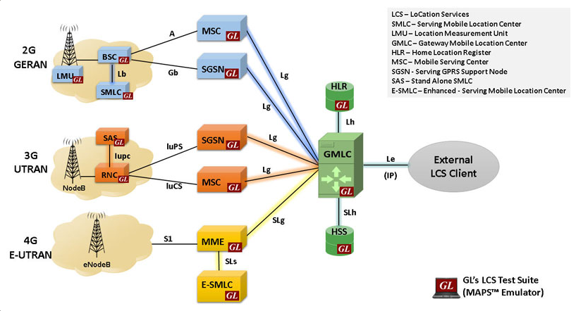
Signaling Tracking
This was a error detection and display system by tracking signaling of Network Elements. It could display the translation path of signaling between network elements and provide the malfunction information to check and recover the network by Maintenance personnel. In this project, I mainly focused on the path display, loop-back submission and UI optimization.
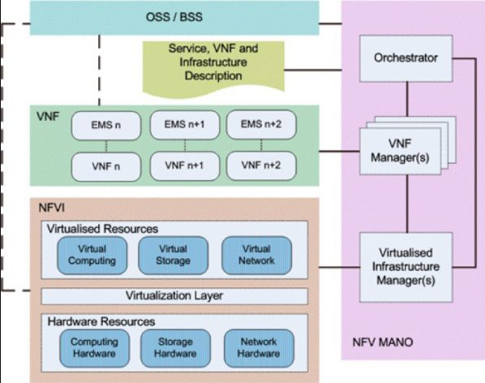
Management and Orchestration (MANO)
This was a new project about vitural network. It could delpoy the vitural network function(VNF) and vitural machine(VM) fastly based on the vitural platform. This project contained NFV-O module, VNFM module and VIM module. I mainly focused on front-end VNFM module which could creat/delete/extend the VNFs. I used the BME which is a developing tools to build and maintain this system